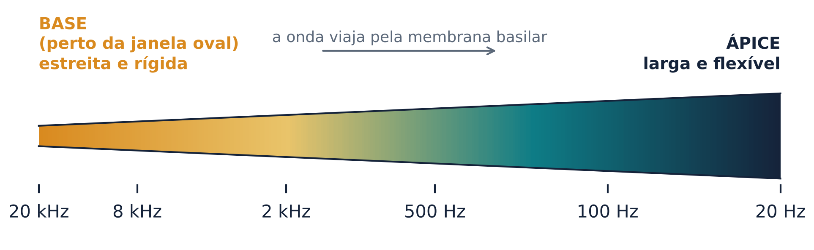
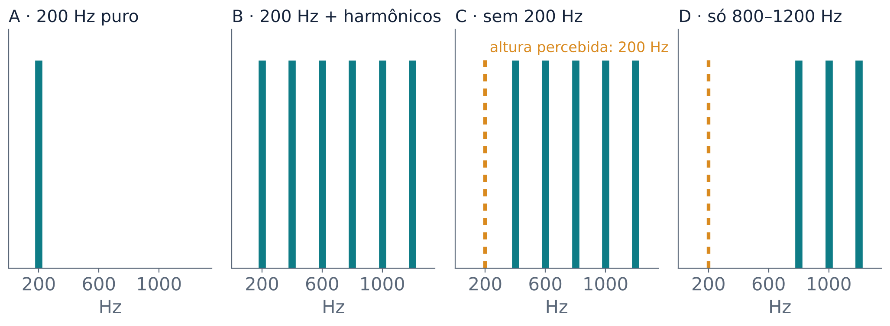
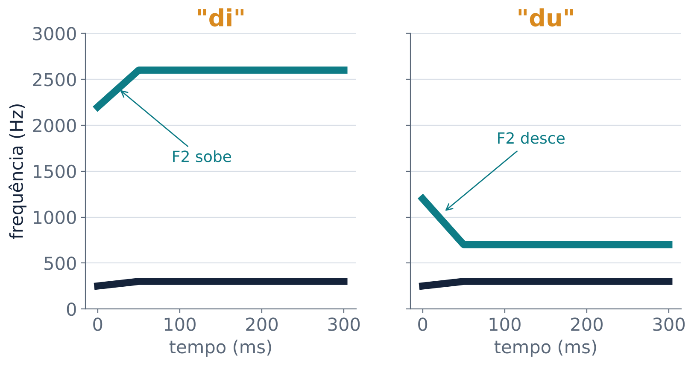
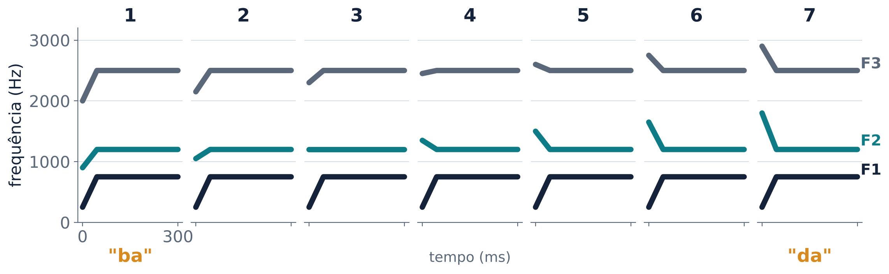
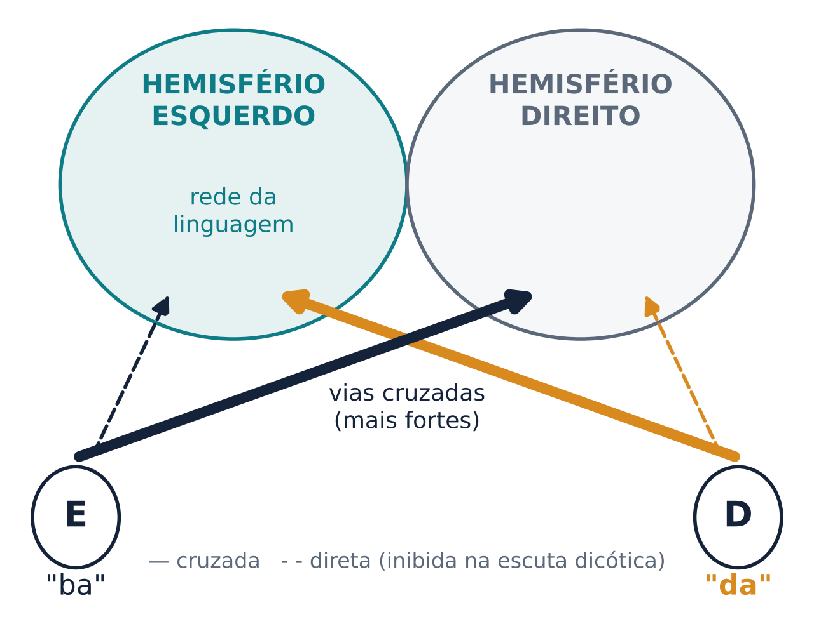

Do ar que vibra no ouvido aos fonemas que o cérebro reconhece
Quando alguém diz “bom dia”, o que chega ao seu ouvido é só ar empurrado e puxado muito rápido. Essa variação de pressão ao longo do tempo é a forma de onda, o único dado que o ouvido recebe (Arnal; Poeppel; Giraud, 2016). A olho nu, ela diz pouco. Por isso os pesquisadores usam outra representação, o espectrograma: o tempo fica no eixo horizontal, a frequência no eixo vertical, e a cor (ou o tom de cinza) mostra quanta energia há em cada frequência a cada instante (Arnal; Poeppel; Giraud, 2016).
O ouvido humano capta sons de cerca de 20 Hz a 20.000 Hz, mas a maior parte da informação usada para reconhecer a fala está abaixo de 8.000 Hz (Arnal; Poeppel; Giraud, 2016). Três tipos de informação aparecem no espectrograma de uma frase.
O envelope. É a subida e a descida lenta da intensidade, que marca o ritmo das sílabas. A fala natural tem por volta de cinco sílabas por segundo (Sjerps; Chang, 2019), e as flutuações de energia do envelope têm pico em cerca de 4 a 6 Hz (Arnal; Poeppel; Giraud, 2016). O envelope sozinho carrega muita coisa. Se trocarmos o conteúdo de cada faixa de frequência por ruído e mantivermos só o envelope de poucas faixas (até mesmo quatro), a frase continua compreensível. Esse som se chama fala vocodificada (Shannon et al., 1995; Arnal; Poeppel; Giraud, 2016). O implante coclear mostra o mesmo princípio: nele, cerca de 15 a 20 eletrodos fazem o papel de milhares de células sensoriais, e mesmo assim a maioria dos usuários chega a entender bem a fala (Arnal; Poeppel; Giraud, 2016).
A voz. As pregas vocais vibram em uma frequência básica, a frequência fundamental (F0), que vai de cerca de 100 Hz na voz de um homem adulto a cerca de 300 Hz na de uma criança. Ela aparece como finas listras verticais no espectrograma (Arnal; Poeppel; Giraud, 2016). A vibração produz também harmônicos, múltiplos da fundamental (Binder, 2016).
Os formantes. A garganta, a boca, a língua e os lábios formam um tubo cuja forma muda o tempo todo. Esse tubo reforça alguns harmônicos e abafa outros. As faixas reforçadas aparecem como bandas horizontais escuras, os formantes, numerados F1, F2, F3 a partir do mais grave (Binder, 2016). As consoantes oclusivas, como /b/, /d/ e /g/, mudam rapidamente a forma do tubo, e os formantes se deslocam logo depois que a boca se abre. Essas transições de formantes costumam durar de 20 a 50 ms. Fricativas como /s/ e /f/ aparecem como ruído agudo, e nasais como /m/ e /n/ têm energia concentrada em frequências baixas (Binder, 2016).
A fala carrega informação em duas escalas de tempo ao mesmo tempo. Eventos curtos, como as transições de formantes e as explosões das consoantes, duram de 20 a 80 ms. As sílabas duram de 150 a 300 ms (Arnal; Poeppel; Giraud, 2016). O cérebro precisa acompanhar as duas escalas em paralelo.
A pergunta que guia o resto da aula é: como o cérebro extrai fonemas estáveis desse sinal, que nunca se repete exatamente igual?
O som passa por três etapas antes de virar sinal nervoso. O ouvido externo (o pavilhão e o canal) leva o som até o tímpano. O ouvido médio resolve um problema físico: o som viaja no ar, mas o ouvido interno é cheio de líquido, que resiste muito mais ao movimento (tem impedância maior). Três ossículos (martelo, bigorna e estribo) funcionam como alavanca, e a diferença de área entre o tímpano, grande, e a janela oval, pequena, concentra a força. Assim o ouvido médio “casa” o ar com o líquido (Mildner, 2008). Pense em empurrar um tambor grande e entregar toda a força numa porta pequena.
O ouvido interno contém a cóclea, um tubo enrolado em espiral. Dentro dela corre a membrana basilar, sobre a qual ficam as células receptoras (Mildner, 2008). A membrana tem cerca de 30 mm de comprimento (Formisano, 2019). Cada frequência faz vibrar mais um ponto diferente dela: os agudos fazem vibrar a base, perto da janela oval, e os graves fazem vibrar o ápice, na ponta da espiral (Arnal; Poeppel; Giraud, 2016; Mildner, 2008). O espaçamento das frequências ao longo da membrana é aproximadamente logarítmico (Formisano, 2019), ou seja, de 100 para 200 Hz e de 1.000 para 2.000 Hz a distância na membrana é parecida. A Figura 1 mostra a membrana desenrolada.

Por isso se diz que a cóclea funciona como um banco de filtros: ela separa o som em muitos canais de frequência que se sobrepõem (Formisano, 2019). As fibras do nervo auditivo herdam essa organização, e cada uma responde melhor a uma frequência característica (Formisano, 2019). O nervo coclear tem de 30.000 a 40.000 fibras (Mildner, 2008). O resultado é que o cérebro não recebe uma forma de onda. Ele recebe algo parecido com um espectrograma: quanta energia há em cada faixa de frequência, a cada instante (Formisano, 2019). Esse mapa ordenado de frequências chama-se tonotopia, e ele se mantém até o córtex (Arnal; Poeppel; Giraud, 2016).
Com a idade, muita gente perde audição; essa perda ligada ao envelhecimento se chama presbiacusia (Gates; Mills, 2005). O experimento 1 do laboratório testou a ideia, apresentada na aula, de que ela começa pelos agudos, codificados na base da cóclea.
O experimento 4 tocou quatro sons (Figura 2). O som A é um tom puro de 200 Hz. O som B tem 200 Hz e seus harmônicos. Os sons C e D não têm nenhuma energia em 200 Hz, só harmônicos mais altos. Mesmo assim, ouvimos a mesma altura (o mesmo “grave” ou “agudo”) em A, C e D. O cérebro deduz a fundamental pelo espaçamento regular dos harmônicos. Esse fenômeno é a fundamental ausente. Em saguis, Bendor e Wang (2005) encontraram, numa região vizinha ao córtex auditivo primário, neurônios que respondem do mesmo jeito a um tom puro e a um som com fundamental ausente de mesma altura.

O telefone fixo dá um exemplo do dia a dia. Ele transmite só a faixa de cerca de 200 a 3.600 Hz, e mesmo assim entendemos a fala sem esforço (Arnal; Poeppel; Giraud, 2016). A fundamental de uma voz masculina, perto de 100 Hz, fica fora dessa faixa, mas continuamos ouvindo uma voz grave.
Do nervo auditivo até o córtex há várias estações: núcleo coclear, complexo olivar superior, colículo inferior (no mesencéfalo) e corpo geniculado medial (no tálamo) (Formisano, 2019; Mildner, 2008). Comparada às outras modalidades sensoriais, a via auditiva tem mais caminhos paralelos e mais sinapses no tronco cerebral, onde já acontece muito processamento (Mildner, 2008).
O complexo olivar superior compara os dois ouvidos. É o primeiro ponto em que se detectam diferenças entre o que chega ao ouvido direito e ao esquerdo. Seus neurônios percebem diferenças de tempo de chegada de poucos microssegundos e diferenças de intensidade. É assim que localizamos de onde vem um som (Mildner, 2008).
A maior parte da informação cruza. Cada ouvido envia sinais aos dois hemisférios, mas cerca de dois terços da informação vão para o lado oposto e um terço para o mesmo lado (Mildner, 2008). Esse cruzamento ajuda a explicar o experimento 3, a escuta dicótica (seção 6).
O córtex auditivo ocupa a face superior do giro temporal superior (em inglês, STG), escondida dentro da fissura de Sylvius (o sulco lateral). O córtex auditivo primário fica no giro de Heschl, que atravessa essa face em diagonal (Formisano, 2019; Sjerps; Chang, 2019). Como está escondido, ele só aparece em reconstruções tridimensionais do cérebro. Sua forma varia muito entre pessoas e entre hemisférios; às vezes ele é duplicado (Formisano, 2019). Atrás dele fica o plano temporal, que costuma ter superfície maior no hemisfério esquerdo, uma das assimetrias anatômicas mais citadas em relação à linguagem (Formisano, 2019). Ao longo do STG e do sulco temporal superior (STS), logo abaixo, também há respostas fortes a sons (Formisano, 2019).
No córtex auditivo primário, neurônios com a mesma frequência preferida ficam juntos, e a preferência muda de forma ordenada ao longo da superfície. Em macacos, três campos (A1, R e RT) formam um núcleo (core); cada um tem um mapa de frequências, e mapas vizinhos são espelhados. O núcleo é cercado por um cinturão (belt), cujos neurônios respondem menos a tons puros e preferem sons mais complexos (Formisano, 2019), e depois por um paracinturão (parabelt) (Binder, 2016). Em humanos, a ressonância magnética funcional de alta resolução mostrou dois mapas de frequência em espelho sobre o giro de Heschl (Formisano et al., 2003), um padrão confirmado por muitos estudos, embora a orientação exata dos mapas ainda seja discutida (Formisano, 2019). E, como nos macacos, as regiões mais afastadas do córtex primário, no STG lateral e no STS, respondem mais à fala do que a sons simples (Binder, 2016).
Duas observações ligam essa organização à fala. Primeiro, as regiões que preferem voz e fala ficam nas partes do mapa que preferem frequências baixas, onde está a maior parte da energia da fala (Formisano, 2019). Segundo, o córtex parece analisar como o espectrograma muda no tempo. Para entender a fala, as modulações temporais mais importantes ficam entre cerca de 1 e 7 Hz (Formisano, 2019), justamente o ritmo das sílabas.
Um fonema é a menor unidade sonora que muda o sentido de uma palavra: trocar /p/ por /b/ transforma “pato” em “bato”. O fonema é uma categoria abstrata. Cada vez que alguém o pronuncia, o som sai um pouco diferente, e ele muda conforme os sons vizinhos, o sotaque e o falante (Binder, 2016).
O exemplo clássico é o /d/. Antes de “i”, o segundo formante sobe durante a transição; antes de “u”, ele desce (Figura 3). Não existe um pedaço do sinal que seja “o /d/” em todos os contextos (Binder, 2016). Isso acontece por causa da coarticulação: enquanto produzimos a consoante, a língua e os lábios já se preparam para a vogal seguinte.

Falantes diferentes acrescentam mais variação. Uma criança e um homem adulto têm tratos vocais de tamanhos diferentes, e os valores absolutos dos formantes mudam. Uma pista mais estável parece ser a razão entre os formantes, e não seu valor absoluto (Binder, 2016).
Esse quebra-cabeça levou Liberman e colegas (1967) a propor a teoria motora da percepção da fala: identificaríamos os fonemas pelos gestos articulatórios do falante, e não pelos sons em si. A teoria é debatida até hoje. Estudos posteriores encontraram pistas acústicas mais estáveis do que se pensava, como a forma geral do espectro no momento em que a consoante é liberada (Binder, 2016). A via dorsal (seção 6) retoma, de forma mais modesta, a ideia de que perceber a fala envolve o sistema que a produz.
Uma solução do cérebro para a variabilidade é ouvir categorias. Em experimentos clássicos dos anos 1950, pesquisadores sintetizaram sílabas que mudavam em passos acústicos iguais de uma consoante para outra. Os ouvintes não ouviam uma mudança gradual, e sim um som e depois uma troca brusca para outro. Além disso, distinguiam mal dois sons da mesma categoria e bem dois sons separados pela mesma distância física, mas de categorias diferentes. Isso é a percepção categórica (Binder, 2016).
O experimento 2 do laboratório reproduziu essa ideia com sete sílabas entre “ba” e “da” (Figura 4). Só o início de F2 e de F3 mudava, em passos iguais, nos primeiros 45 ms.

As fronteiras entre categorias dependem da língua aprendida na infância. Falantes de inglês, por exemplo, não distinguem duas oclusivas do híndi que, para falantes de híndi, são fonemas diferentes, com fronteira categórica nítida (Binder, 2016). O sistema de percepção de fonemas se “afina” durante o desenvolvimento, tema da aula 11. Mas fronteiras categóricas não são exclusivas de humanos. Chinchilas treinadas a separar /da/ de /ta/ classificaram sílabas intermediárias com uma fronteira parecida com a de adultos falantes de inglês (Kuhl; Miller, 1975). Isso sugere que parte das categorias da fala aproveita propriedades gerais da audição dos mamíferos.
Na fala senoidal, uma frase é reduzida a três ou quatro assobios que seguem os formantes. Quem ouve sem aviso escuta apitos eletrônicos; quem é avisado de que se trata de fala passa a ouvir os sons da fala, com o mesmo estímulo físico (Remez et al., 1981; Binder, 2016). Estudos de imagem que compararam o cérebro antes e depois de as pessoas aprenderem a ouvir esses sons como fonemas encontraram mais atividade no STS posterior esquerdo depois do treino (Binder, 2016). O que percebemos depende tanto do que esperamos quanto do que entra pelo ouvido.
Algumas pessoas com epilepsia que não responde a remédios precisam de cirurgia para retirar o tecido onde as crises começam. Para localizá-lo, os médicos às vezes colocam grades de eletrodos diretamente sobre o córtex, e o paciente fica internado de alguns dias a algumas semanas esperando as crises. Nesse período, quem consentiu antes da cirurgia pode participar de tarefas de pesquisa. Esse método é a eletrocorticografia (ECoG) (Leonard; Chang, 2016).
Os eletrodos ficam a poucos milímetros uns dos outros e registram a atividade milissegundo a milissegundo, uma combinação que nem a ressonância (lenta) nem o EEG de couro cabeludo (espacialmente borrado) oferecem. A medida mais usada é a atividade de alta frequência, o gama alto (tipicamente entre 60 e 200 Hz), que acompanha o disparo de neurônios perto do eletrodo e se correlaciona com o sinal da ressonância funcional. O método tem limites: os eletrodos ficam só onde os médicos precisam deles, raramente nos dois hemisférios, e os cérebros estudados têm epilepsia (Leonard; Chang, 2016).
Chang e colegas (2010) tocaram para pacientes com ECoG um contínuo sintetizado de /ba/ a /da/ a /ga/, parecido com o do laboratório. Os padrões de atividade no STG posterior não mudavam em passos iguais: agrupavam-se nas mesmas categorias que as pessoas relatam ouvir. A diferença entre categorias era máxima por volta de 110 ms depois do início do som (Leonard; Chang, 2016). Ou seja, o STG faz o que vocês fizeram no experimento 2: transforma passos acústicos iguais em categorias.
Mesgarani e colegas (2014) registraram o STG com ECoG enquanto pacientes ouviam centenas de frases naturais em inglês (Leonard; Chang, 2016). Cada eletrodo não respondia a um fonema isolado, mas a um grupo de fonemas com um traço fonético em comum. Um eletrodo respondia a todas as oclusivas (/b/, /d/, /g/, /p/, /t/, /k/); outro às fricativas sibilantes (/s/, /z/, /ʃ/); outro às nasais; outros a grupos de vogais (Sjerps; Chang, 2019). Essa seletividade vem da sintonia a padrões acústicos típicos de cada classe: energia espalhada por muitas frequências nas oclusivas, componentes agudos nas fricativas, frequências baixas nas nasais. Por isso traços com pistas acústicas fortes, como o modo de articulação, organizam as respostas mais do que o ponto de articulação (Sjerps; Chang, 2019).
As respostas do STG à fala aparecem cedo, entre cerca de 50 e 150 ms depois do estímulo (Leonard; Chang, 2016). Ao longo do lobo temporal há um gradiente: quanto mais anterior e ventral a região, mais ela prefere sons parecidos com fala (Sjerps; Chang, 2019).
Numa festa barulhenta, conseguimos acompanhar uma voz entre muitas: é o chamado problema da festa de coquetel, estudado desde os experimentos de Cherry (1953) com duas mensagens faladas ao mesmo tempo. Mesgarani e Chang (2012) tocaram duas vozes ao mesmo tempo para pacientes com ECoG e pediram que relatassem o que uma delas dizia. A partir da atividade do STG, reconstruíram o espectrograma que o cérebro estava representando. Ele refletia só a voz atendida, como se a outra não tivesse sido ouvida (Leonard; Chang, 2016).
O giro temporal superior não é um microfone. Ele não grava todo o som que chega; ele representa traços fonéticos, organizados em categorias e já filtrados por aquilo a que você presta atenção.
Depois da análise acústica, a informação da fala precisa ir para dois lugares: para o sistema que entende o significado e para o sistema que controla a boca. Hickok e Poeppel (2007) propuseram um modelo de duas vias. A análise espectrotemporal acontece nos dois hemisférios, no STG dorsal, e a representação dos fonemas envolve o STS. Depois, a informação se divide (Hickok; Poeppel, 2016):
As primeiras propostas viam a via dorsal auditiva como uma via espacial (“onde”), como na visão; hoje há certo consenso de que ela faz a integração entre audição e movimento (Hickok; Poeppel, 2016). Mas a área ainda discute a lateralização. Alguns estudos de imagem que comparam fala inteligível com controles acústicos encontram respostas predominantemente à esquerda, o que levou alguns autores a defender uma rede de percepção da fala inteiramente lateralizada à esquerda. Outros encontram ativação nos dois hemisférios mesmo depois de descontar a acústica, e o debate continua (Hickok; Poeppel, 2016).
Na escuta dicótica, cada ouvido recebe um som diferente ao mesmo tempo. Na versão original do teste, Kimura (1961) apresentava três números falados a um ouvido e, ao mesmo tempo, três números diferentes ao outro, e o ouvido direito saía na frente (Mildner, 2008). A explicação clássica usa o cruzamento da via auditiva (Figura 5). As vias cruzadas têm mais fibras, e quando os dois ouvidos competem as vias do mesmo lado são parcial ou totalmente suprimidas. A sílaba do ouvido direito vai direto ao hemisfério esquerdo, onde a linguagem é processada na maioria das pessoas; a do ouvido esquerdo chega primeiro ao hemisfério direito e precisa atravessar o corpo caloso, perdendo qualidade no caminho (Mildner, 2008). Nem todos aceitam essa explicação: para Efron, a vantagem viria de uma tendência a prestar mais atenção a um lado do que ao outro (Mildner, 2008).

A vantagem do ouvido direito é uma medida indireta e imperfeita da lateralização. O teste de Wada, que anestesia um hemisfério por vez, indica linguagem à esquerda em mais de 90% dos destros e em cerca de 70% dos canhotos (Mildner, 2008). Já no teste dicótico, quando ele é repetido, só cerca de metade das pessoas mostra uma vantagem do ouvido direito consistente e estatisticamente significativa (Mildner, 2008).
A percepção da fala não é só auditiva. Ver o rosto de quem fala ajuda muito quando há ruído (Sumby; Pollack, 1954; Beauchamp, 2016). Às vezes a visão chega a mudar o que ouvimos. No efeito McGurk, descoberto por acaso, o som “ba” é combinado com o vídeo de uma boca dizendo “ga”, e muitas pessoas ouvem “da”, uma sílaba que não está nem no som nem na imagem (McGurk; MacDonald, 1976; Beauchamp, 2016).
As diferenças entre pessoas são enormes. Com os mesmos vídeos, há quem nunca tenha a ilusão e quem a tenha em todas as tentativas (Beauchamp, 2016). A região que integra o que vemos e o que ouvimos na fala é o STS posterior. Quanto mais o STS esquerdo de uma pessoa responde aos vídeos de McGurk, mais ela tende a ter a ilusão (Beauchamp, 2016). E pulsos de estimulação magnética transcraniana (TMS) no STS, dados perto do início da sílaba, reduzem a ilusão sem atrapalhar a percepção de outros estímulos (Beauchamp; Nath; Pasalar, 2010).
Os experimentos do Laboratório de Escuta reproduzem, em pequena escala, achados desta aula. Os resultados de uma turma são ruidosos (celulares e fones diferentes, poucas tentativas por pessoa), então o que importa é o padrão geral e se ele se parece com o esperado.
Experimento 1 · Até onde você ouve? Um tom subia de 8.000 a 20.000 Hz, e cada um marcava quando deixava de ouvi-lo. Espera-se que, em média, o grupo mais jovem pare em frequências mais altas que o de mais idade, com bastante sobreposição, se a perda ligada à idade começa pela base da cóclea, como vimos na aula (seção 2). Mas há uma variável de confusão: alto-falantes de celular e muitos fones não reproduzem bem os agudos mais altos. Se o aparelho corta antes do ouvido, o limite medido é o do aparelho. Para separar as duas explicações, seria preciso usar o mesmo equipamento calibrado para todos (aula 2).
Experimento 2 · Ba ou da? Na parte A, cada um classificou 28 sílabas (os sete passos da Figura 4, quatro vezes cada). Espera-se uma curva em degrau: os primeiros passos quase sempre “ba”, os últimos quase sempre “da” e uma troca brusca no meio. Na parte B, deve ser mais fácil distinguir o par que atravessa a fronteira do que pares dentro de uma categoria. As duas coisas juntas são a marca da percepção categórica (seção 4), e o STG mostra o mesmo padrão (seção 5). Se alguém não encontrou fronteira, a causa provável é a qualidade do som sintetizado naquele aparelho, e não a ausência do fenômeno.
Experimento 3 · Escuta dicótica. Em 12 tentativas, cada ouvido recebia uma sílaba diferente. Espera-se que a maioria relate mais vezes a sílaba do ouvido direito, mas não todos: a medida é instável, nem todos têm linguagem à esquerda, e fones trocados de lado invertem o resultado (para isso existia o botão “Testar fones”).
Experimento 4 · A nota fantasma. Espera-se que todos ouçam a mesma altura em A, C e D (Figura 2). Um detalhe curioso: alto-falantes pequenos reproduzem mal os graves, e então até o som A chega ao ouvido em parte pelos harmônicos. Ainda assim a altura ouvida é a mesma, porque o cérebro a calcula pelo espaçamento dos harmônicos.
Ilusões para a turma. No vídeo do efeito McGurk, espere grande variação entre colegas: uns ouvem o som, outros a sílaba da imagem, outros uma fusão. A média da turma esconde essa variação individual. (No clipe de reserva, da BBC, a boca diz “fa” em vez de “ga”, e muitos passam a ouvir “fa”.) Na fala senoidal, quase todos ouvem apitos na primeira vez e palavras depois de ouvir a frase original.
Uma colega diz que “a fala é só uma sequência de letras faladas, uma depois da outra”. Use o espectrograma e a coarticulação para explicar por que isso não é verdade.
Resposta
No espectrograma, a fala é um fluxo contínuo, sem pausas entre fonemas. Por causa da coarticulação, cada fonema muda conforme os vizinhos: o F2 do /d/ sobe antes de “i” e desce antes de “u”. Não há um pedaço fixo do sinal para cada “letra”; o cérebro precisa extrair categorias de um sinal que varia.
Por que o limite de audição para agudos costuma cair com a idade, e por que o experimento 1 não basta para medir esse efeito numa turma?
Resposta
Os agudos são codificados na base da cóclea, que, segundo a ideia apresentada na aula, é a primeira região a se desgastar com a idade (presbiacusia). Mas cada pessoa usou o próprio celular e fone, e muitos aparelhos não reproduzem bem os agudos mais altos. O limite medido pode ser o do equipamento, uma variável de confusão; seria preciso usar o mesmo equipamento calibrado para todos.
Por que se diz que o córtex auditivo recebe um “espectrograma neural”, e não a forma de onda?
Resposta
A cóclea funciona como um banco de filtros: cada ponto da membrana basilar vibra mais com uma frequência, e as fibras do nervo auditivo herdam essa preferência. O que sobe pela via auditiva é a energia em cada faixa de frequência ao longo do tempo, organizada de forma tonotópica até o córtex.
No experimento 2, os sete passos eram fisicamente iguais. Que resultado na parte B (iguais ou diferentes) mostraria percepção categórica, e que resultado de ECoG mostra o mesmo no cérebro?
Resposta
A discriminação deveria ser melhor no par que atravessa a fronteira entre “ba” e “da” do que em pares da mesma categoria, mesmo com a mesma distância física. Chang e colegas (2010) mostraram que os padrões de atividade do STG para um contínuo /ba/–/da/–/ga/ se agrupam em categorias, e não em passos iguais.
Um paciente com lesão no hemisfério esquerdo entende palavras ouvidas razoavelmente bem, mas comete muitos erros de sons ao falar. Como o modelo de duas vias explica esse quadro?
Resposta
A via ventral, do som ao significado, é bilateral, então o hemisfério direito ainda sustenta boa parte do reconhecimento de palavras. A produção dos sons depende da via dorsal, do som à articulação, que é lateralizada à esquerda e passa pela área Spt. Uma lesão nessa via produz um quadro como a afasia de condução.
Na escuta dicótica, por que aparece a vantagem do ouvido direito, e por que o placar da turma não dá 100%?
Resposta
As vias cruzadas predominam quando os ouvidos competem, então a sílaba do ouvido direito vai direto ao hemisfério esquerdo, dominante para a linguagem na maioria das pessoas. Não dá 100% porque nem todos têm linguagem à esquerda, a medida é instável (só cerca de metade mostra vantagem consistente ao repetir o teste), e atenção ou fones trocados alteram o resultado.
Por que ver o rosto de quem fala ajuda a entender num bar barulhento? Use dois resultados da aula.
Resposta
O ruído mascara pistas curtas que distinguem consoantes, como as transições de formantes do experimento 2, e o rosto dá parte dessa informação por outro canal (os lábios se fecham no /b/, por exemplo). O efeito McGurk mostra que o cérebro combina automaticamente o que vê e o que ouve, no STS posterior. Além disso, a atenção seleciona a voz seguida já no STG (festa de coquetel).
ARNAL, L. H.; POEPPEL, D.; GIRAUD, A.-L. A neurophysiological perspective on speech processing in “The Neurobiology of Language”. In: HICKOK, G.; SMALL, S. L. (org.). Neurobiology of language. London: Academic Press, 2016. p. 463-478. DOI: https://doi.org/10.1016/B978-0-12-407794-2.00038-9.
BEAUCHAMP, M. S. Audiovisual speech integration: neural substrates and behavior. In: HICKOK, G.; SMALL, S. L. (org.). Neurobiology of language. London: Academic Press, 2016. p. 515-526. DOI: https://doi.org/10.1016/B978-0-12-407794-2.00042-0.
BEAUCHAMP, M. S.; NATH, A. R.; PASALAR, S. fMRI-guided transcranial magnetic stimulation reveals that the superior temporal sulcus is a cortical locus of the McGurk effect. The Journal of Neuroscience, v. 30, n. 7, p. 2414-2417, 2010. DOI: https://doi.org/10.1523/JNEUROSCI.4865-09.2010.
BENDOR, D.; WANG, X. The neuronal representation of pitch in primate auditory cortex. Nature, v. 436, n. 7054, p. 1161-1165, 2005. DOI: https://doi.org/10.1038/nature03867.
BINDER, J. R. Phoneme perception. In: HICKOK, G.; SMALL, S. L. (org.). Neurobiology of language. London: Academic Press, 2016. p. 447-461. DOI: https://doi.org/10.1016/B978-0-12-407794-2.00037-7.
CHANG, E. F. et al. Categorical speech representation in human superior temporal gyrus. Nature Neuroscience, v. 13, n. 11, p. 1428-1432, 2010. DOI: https://doi.org/10.1038/nn.2641.
CHERRY, E. C. Some experiments on the recognition of speech, with one and with two ears. The Journal of the Acoustical Society of America, v. 25, n. 5, p. 975-979, 1953. DOI: https://doi.org/10.1121/1.1907229.
FORMISANO, E. The “speech ready” auditory cortex. In: HAGOORT, P. (org.). Human language: from genes and brains to behavior. Cambridge, MA: The MIT Press, 2019. p. 481-498.
FORMISANO, E. et al. Mirror-symmetric tonotopic maps in human primary auditory cortex. Neuron, v. 40, n. 4, p. 859-869, 2003. DOI: https://doi.org/10.1016/S0896-6273(03)00669-X.
GATES, G. A.; MILLS, J. H. Presbycusis. The Lancet, v. 366, n. 9491, p. 1111-1120, 2005. DOI: https://doi.org/10.1016/S0140-6736(05)67423-5.
HICKOK, G.; POEPPEL, D. The cortical organization of speech processing. Nature Reviews Neuroscience, v. 8, n. 5, p. 393-402, 2007. DOI: https://doi.org/10.1038/nrn2113.
HICKOK, G.; POEPPEL, D. Neural basis of speech perception. In: HICKOK, G.; SMALL, S. L. (org.). Neurobiology of language. London: Academic Press, 2016. p. 299-310. DOI: https://doi.org/10.1016/B978-0-12-407794-2.00025-0.
KIMURA, D. Cerebral dominance and the perception of verbal stimuli. Canadian Journal of Psychology, v. 15, n. 3, p. 166-171, 1961. DOI: https://doi.org/10.1037/h0083219.
KUHL, P. K.; MILLER, J. D. Speech perception by the chinchilla: voiced-voiceless distinction in alveolar plosive consonants. Science, v. 190, n. 4209, p. 69-72, 1975. DOI: https://doi.org/10.1126/science.1166301.
LEONARD, M. K.; CHANG, E. F. Direct cortical neurophysiology of speech perception. In: HICKOK, G.; SMALL, S. L. (org.). Neurobiology of language. London: Academic Press, 2016. p. 479-489. DOI: https://doi.org/10.1016/B978-0-12-407794-2.00039-0.
LIBERMAN, A. M. et al. Perception of the speech code. Psychological Review, v. 74, n. 6, p. 431-461, 1967. DOI: https://doi.org/10.1037/h0020279.
McGURK, H.; MacDONALD, J. Hearing lips and seeing voices. Nature, v. 264, n. 5588, p. 746-748, 1976. DOI: https://doi.org/10.1038/264746a0.
MESGARANI, N.; CHANG, E. F. Selective cortical representation of attended speaker in multi-talker speech perception. Nature, v. 485, n. 7397, p. 233-236, 2012. DOI: https://doi.org/10.1038/nature11020.
MESGARANI, N. et al. Phonetic feature encoding in human superior temporal gyrus. Science, v. 343, n. 6174, p. 1006-1010, 2014. DOI: https://doi.org/10.1126/science.1245994.
MILDNER, V. The cognitive neuroscience of human communication. New York: Lawrence Erlbaum Associates, 2008.
REMEZ, R. E. et al. Speech perception without traditional speech cues. Science, v. 212, n. 4497, p. 947-949, 1981. DOI: https://doi.org/10.1126/science.7233191.
SHANNON, R. V. et al. Speech recognition with primarily temporal cues. Science, v. 270, n. 5234, p. 303-304, 1995. DOI: https://doi.org/10.1126/science.270.5234.303.
SJERPS, M. J.; CHANG, E. F. The cortical processing of speech sounds in the temporal lobe. In: HAGOORT, P. (org.). Human language: from genes and brains to behavior. Cambridge, MA: The MIT Press, 2019. p. 361-379.
SUMBY, W. H.; POLLACK, I. Visual contribution to speech intelligibility in noise. The Journal of the Acoustical Society of America, v. 26, n. 2, p. 212-215, 1954. DOI: https://doi.org/10.1121/1.1907309.
Material de estudo da disciplina Bases neurais da comunicação humana (UFRN), Prof. Daniel Y. Takahashi. Texto e figuras elaborados para o curso; as fontes estão nas Referências.